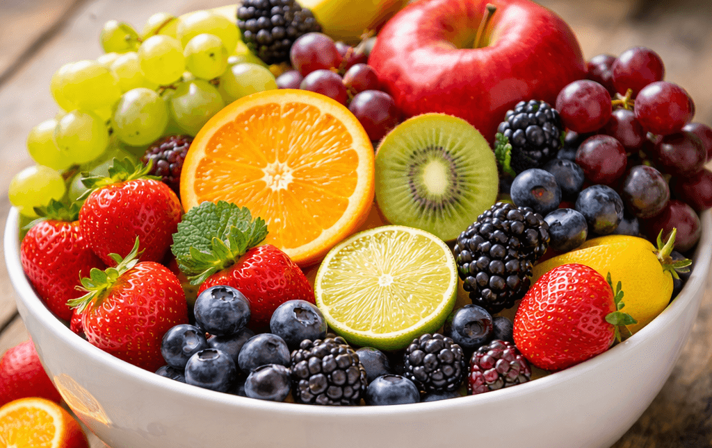

A bright yellow citrus fruit known for its intense aroma and sharp, acidic taste.
This section continues the exploration of citrus fruits by focusing on the lemon. While lemons share many structural characteristics with other members of the Citrus genus, they offer a noticeably different sensory experience that makes them an interesting subject for observation and description. Notably, the lemon is not a tropical fruit, so Subject Learning Outcome A is not relevant here: (a) Identify and describe tropical fruits using sensory vocabulary like aroma, sweetness, and texture.
Lemons are typically smaller and more oval in shape than oranges, with a thick rind and a slightly pointed end. The peel contains highly concentrated aromatic oils, which produce a strong citrus scent when the skin is scratched or grated. Inside, the fruit is divided into segments filled with pale, translucent juice vesicles.
Like oranges and other citrus fruits, lemons belong to the genus Citrus.[1] These fruits share common botanical features, including segmented flesh and oil-rich skins. However, lemons differ from many citrus varieties in their flavour profile. They contain relatively little natural sugar and a high level of acidity, which gives them their characteristically sour taste.
Because of this intense acidity, lemons are rarely eaten on their own. Instead, they are widely used to enhance other foods and drinks. Lemon juice adds brightness and freshness to both sweet and savoury dishes, while lemon zest contributes fragrant oils that intensify aroma and flavour.[2]
From an observational perspective, lemons demonstrate how colour, scent, and flavour interact to create a distinctive sensory identity. Their bright yellow colour often suggests sharpness or freshness, while the strong aroma released from the peel can be detected even before the fruit is cut.
By the end of this module you should feel more confident organising your fruit observations into structured catalogue entries that combine descriptive writing and images. These skills will support your progress toward Assessment, where you will create a short fruit catalogue featuring three fruits of your choosing.